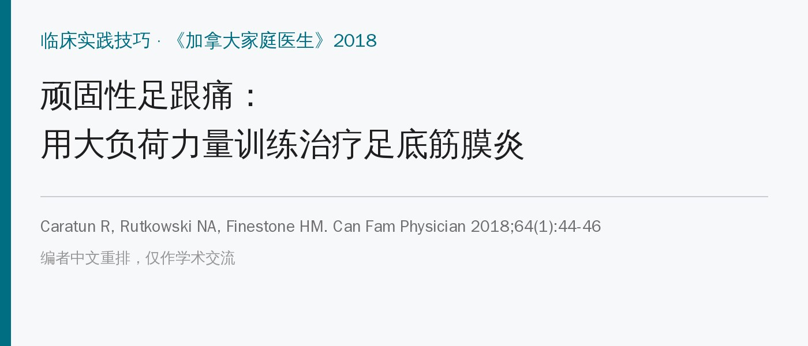
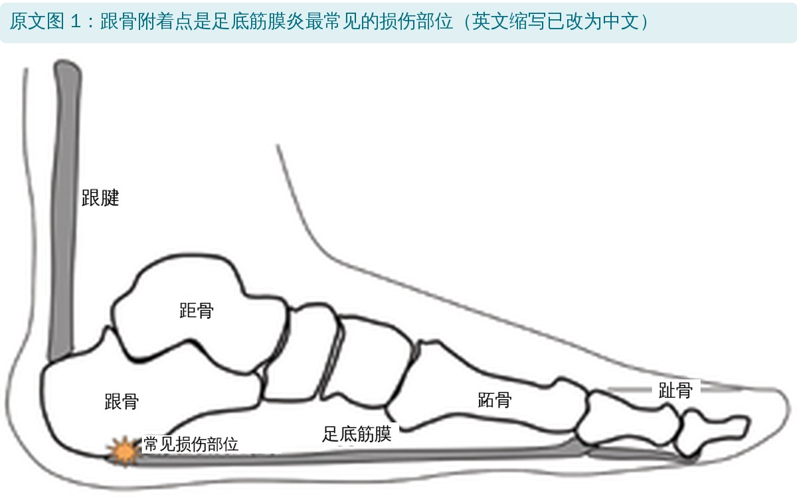
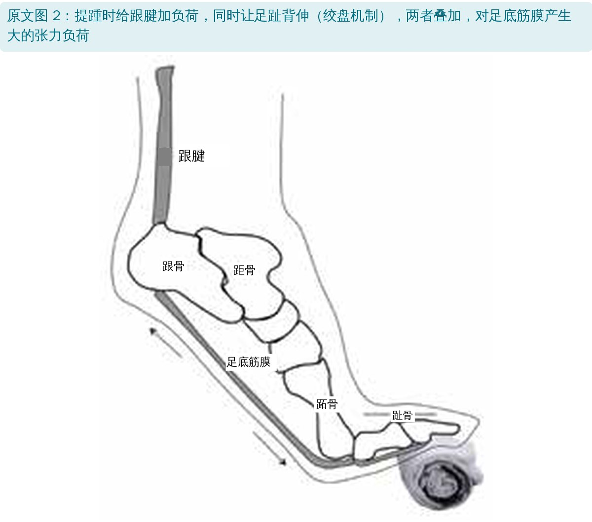
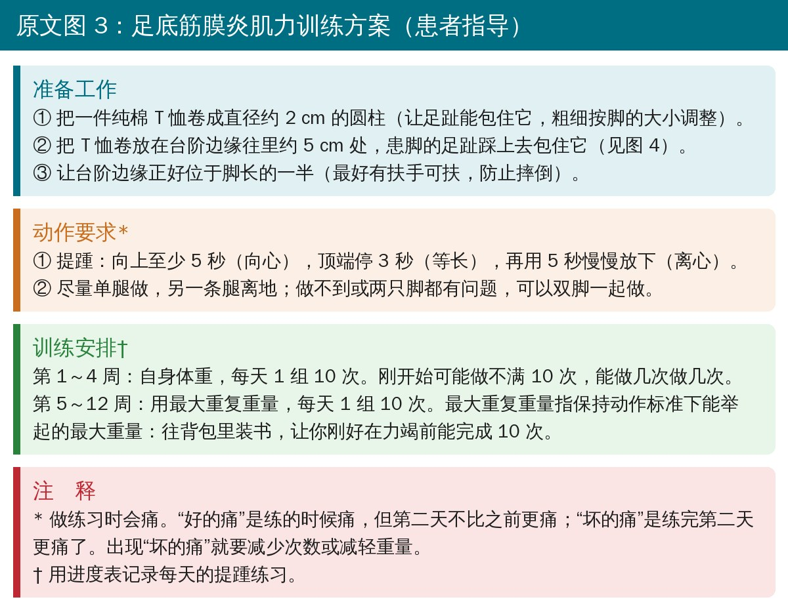
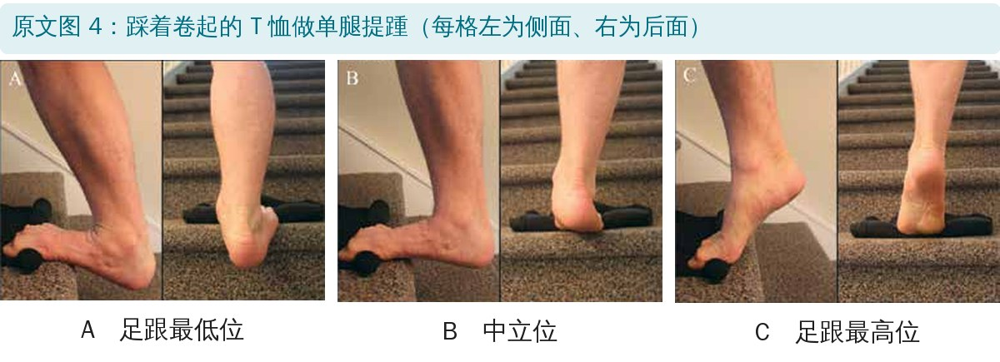
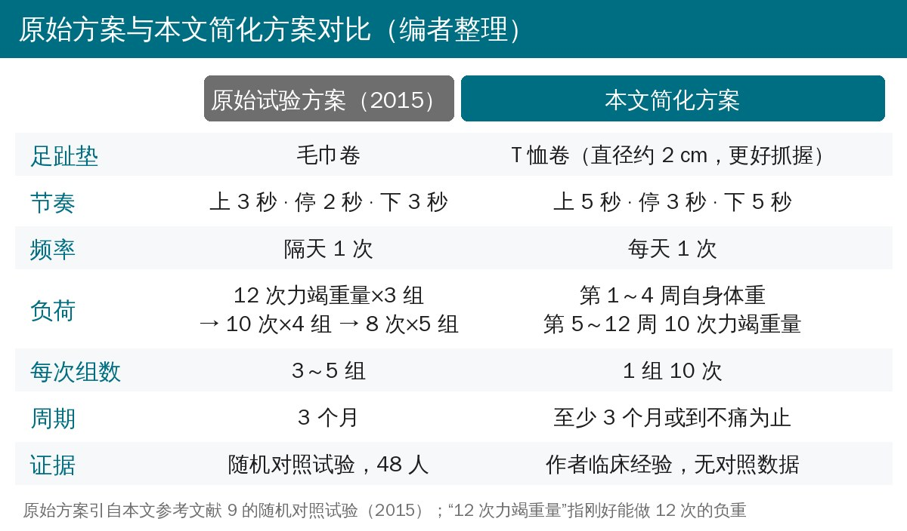

🔖原文信息（编者中文重排）
📚 文献信息
▪ Caratun R, Rutkowski NA, Finestone HM. Stubborn heel pain: treatment of plantar fasciitis using high-load strength training. Can Fam Physician. 2018;64(1):44-46. PMID: 29358253
▪ 作者来自加拿大渥太华大学和布吕耶尔医院，发表在《加拿大家庭医生》的“临床实践技巧”栏目
▪ 文章类型：临床经验分享。核心方案来自 Rathleff 等 2015 年的随机对照试验，作者做了简化
足底筋膜炎是足跟下方疼痛最常见的原因，普通人群患病率约 3.6%～7%，在跑步损伤里占到 8%。它的名字有点误导：病理上看到的主要是退变，而不是炎症，所以也有人叫它“足底筋膜病”。

🔖原文图 1：损伤最常见的位置在足底筋膜的跟骨附着点
大多数人一年内会好转，但约 40% 的患者 2 年后还有症状。常用的激素注射、矫形鞋垫、夜间支具、牵伸，效果都不太稳定。既然是退变，思路就借鉴跟腱病和髌腱病：用大的张力负荷刺激胶原合成，促进修复。

🔖原文图 2：提踵 + 足趾背伸，两路张力叠加在足底筋膜上
关键在绞盘机制：足趾背伸时，足底筋膜像绞盘上的绳子一样被卷紧；这时再做提踵给跟腱加负荷，两股力一起把足底筋膜“拉满”。所以动作要点就是脚趾垫高再提踵。

🔖原文图 3：患者指导（中文翻译）

🔖原文图 4：踩在 T 恤卷上的单腿提踵
• 垫子用 T 恤，不用毛巾：作者发现毛巾太厚不好抓，纯棉 T 恤卷成约 2 cm 粗的圆柱，柔软、好调整
• 位置：T 恤卷放在台阶边缘往里约 5 cm，足趾包住它；台阶边缘在脚长一半的位置，足跟悬空
• 旁边最好有扶手，防止摔倒
• 上 5 秒 → 顶端停 3 秒 → 下 5 秒，慢起慢落，离心阶段和向心阶段一样慢
• 尽量单腿做，另一条腿离地；做不了或双脚都痛，就双脚一起
• 下放时足跟可以低于台阶（图 4 A），让足底筋膜和跟腱都拉到位
• 每天 1 组 10 次，至少坚持 3 个月或做到不痛为止
• 第 1～4 周：自身体重；一开始做不满 10 次很正常，能做几次做几次
• 第 5～12 周：背包装书负重，加到刚好在力竭前能做完 10 次的重量
• 疼痛规则：练的时候痛可以接受，第二天比之前更痛就是“坏的痛”，要减次数或减重量
• 配一张进度表，每天打钩记录，提高依从性
• 可以单独使用，也可以和减重、牵伸、消炎药等一起用；做满 6 个月还没好就回去找医生

🔖原始试验方案与本文简化方案对比（编者整理）
作者说原方案组数一直在变，患者记不住、坚持不了，所以简化成每天 1 组 10 次。好记是好记，但要注意，总量和强度都变了：前 4 周只用自身体重，算不上“大负荷”；每次只有 1 组，比原方案的 3～5 组少得多；频率又从隔天改成了每天。
这篇文章本身没有数据，证据全部来自那一项原始试验。PubMed 上该试验的摘要显示：
• 48 名经超声确认的足底筋膜炎患者，两组都配了鞋垫，一组每天做足底筋膜专项牵伸，一组隔天做大负荷力量训练
• 3 个月时（主要终点）：力量组足功能指数比牵伸组低 29 分（95% 置信区间 6～52），好得更快
• 1、6、12 个月：两组没有差别；次要指标也都没有差别
所以更准确的说法是：大负荷力量训练可能让疼痛和功能更快改善，而不是长期效果更好。作者的简化版本则没有经过任何对照研究验证，“依从性和疗效都提高了”只是临床印象。
• “已验证的方案”说法过头：原始证据只有一项 48 人的试验，而且优势只在 3 个月出现；作者又改了节奏、组数、频率和负荷，改完的版本并没有验证过
• 练的是跖屈肌，却说增加背屈力量：讨论部分说这个方案能提高踝背屈力量，抵消足底筋膜炎患者背屈力量下降。提踵练的是小腿三头肌（跖屈）；而引用的文献 11 讲的是腓肠肌挛缩（背屈活动度受限），并不是背屈力量
• 引用不支持论点：说“与其他治疗相比疗效更好”时引用了文献 10，那是一篇跟腱病离心训练和胶原合成的研究，不是足底筋膜炎的疗效比较
• 图注缩写不准：图 1、图 2 图注把 Ca 写成“跟骨附着点”，但图中 Ca 标的是整块跟骨
• “大负荷”名不副实：前 4 周只用自身体重、每天 1 组，与原方案从第 1 周起就用 12 次力竭重量做 3 组差别很大
• 频率改成每天，没解释理由：原试验特意隔天训练，给组织留恢复时间；每天做到力竭附近，组织能否恢复文中没有讨论
• 脚趾垫高 + 慢速提踵是这个方案的核心，绞盘机制让足底筋膜真正吃到负荷
• 按原试验的强度更有依据：隔天练，从 12 次力竭重量×3 组起步，逐步加到 8 次×5 组；患者实在记不住，再用本文的简化版提高依从性
• 提前讲清楚“好的痛”和“坏的痛”，用第二天的反应调整剂量
• 期望要说实话：它可能让好转来得更快，但一年后和牵伸 + 鞋垫的效果差不多
• 家里就能做，只需要台阶、T 恤和装书的背包，成本很低
欢迎关注骨科康复小黄公众号，获取更多物理治疗的专业知识！
📄参考文献：
Caratun R, Rutkowski NA, Finestone HM. Stubborn heel pain: treatment of plantar fasciitis using high-load strength training. Can Fam Physician. 2018;64(1):44-46. PMID: 29358253
Rathleff MS, Mølgaard CM, Fredberg U, et al. High-load strength training improves outcome in patients with plantar fasciitis: a randomized controlled trial with 12-month follow-up. Scand J Med Sci Sports. 2015;25(3):e292-300. doi:10.1111/sms.12313
原文版权归加拿大家庭医生学会及作者所有，未标注开放许可协议。本文为学术交流用的中文解读：图 1～4 引自原文（英文标注改为中文，图 3 为中文翻译重排），方案对比卡为编者整理，原始试验数据来自其 PubMed 摘要。版权归原作者与期刊，如有侵权请联系删除。